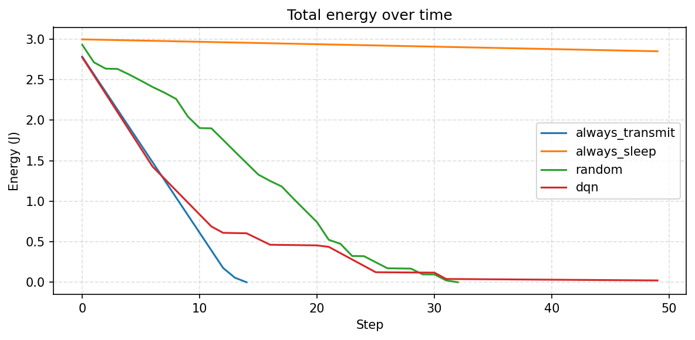
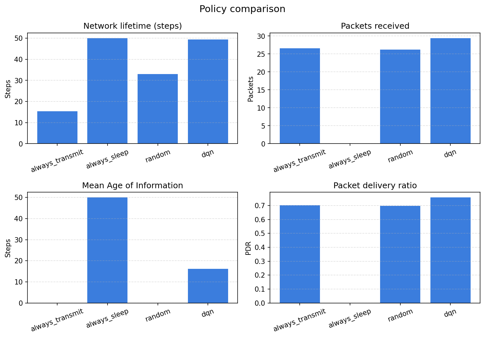

بهینهسازی مصرف انرژی در شبکههای اینترنت اشیا با یادگیری تقویتی عمیق
IoT Energy Optimization using Deep Reinforcement Learning (DQN)
مسئله و انگیزه
نودهای حسگر IoT با باتری محدود کار میکنند. ارسال مداوم عمر شبکه را کم میکند و خواب بیشازحد کیفیت پایش را کاهش میدهد.
اتصالات جهانی IoT از حدود ۲۱ میلیارد (۲۰۲۵) به حدود ۴۸ میلیارد (۲۰۳۵) میرسد؛ بنابراین تصمیم هوشمند Transmit/Sleep ضروری است.
اهداف
- شبیهسازی با انرژی فاصلهآگاه و افت بسته
- آموزش DQN برای تصمیم ارسال یا خواب
- مقایسه با Always Transmit / Sleep / Random
- داشبورد تعاملی با Streamlit
معماری سیستم
UI → Simulation → RL (DQN) → Analytics

ابزارها: Python، Gymnasium، Stable-Baselines3، Streamlit
روش
- TX انرژی وابسته به فاصله
- کانال ساده با احتمال drop
- معیار AoI برای تازگی داده
- پاداش: بسته/عمر − انرژی/AoI/drop

نتایج کلیدی
۳ نود، افق ۵۰، آموزش ۶۰۰۰، میانگین ۵ اپیزود
| سیاست | Life | Pkt | PDR |
|---|---|---|---|
| Transmit | 15.4 | 26.6 | 0.70 |
| Sleep | 50 | 0 | 0.00 |
| Random | 33 | 26.2 | 0.70 |
| DQN | 49.4 | 29.4 | 0.76 |
در تنظیمات رسمی گزارش، DQN بهترین مصالحه را دارد.
